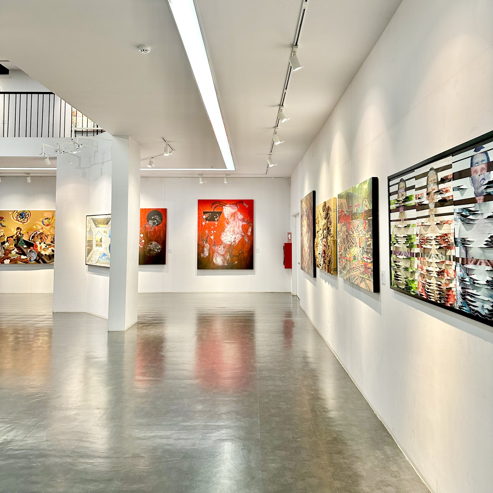
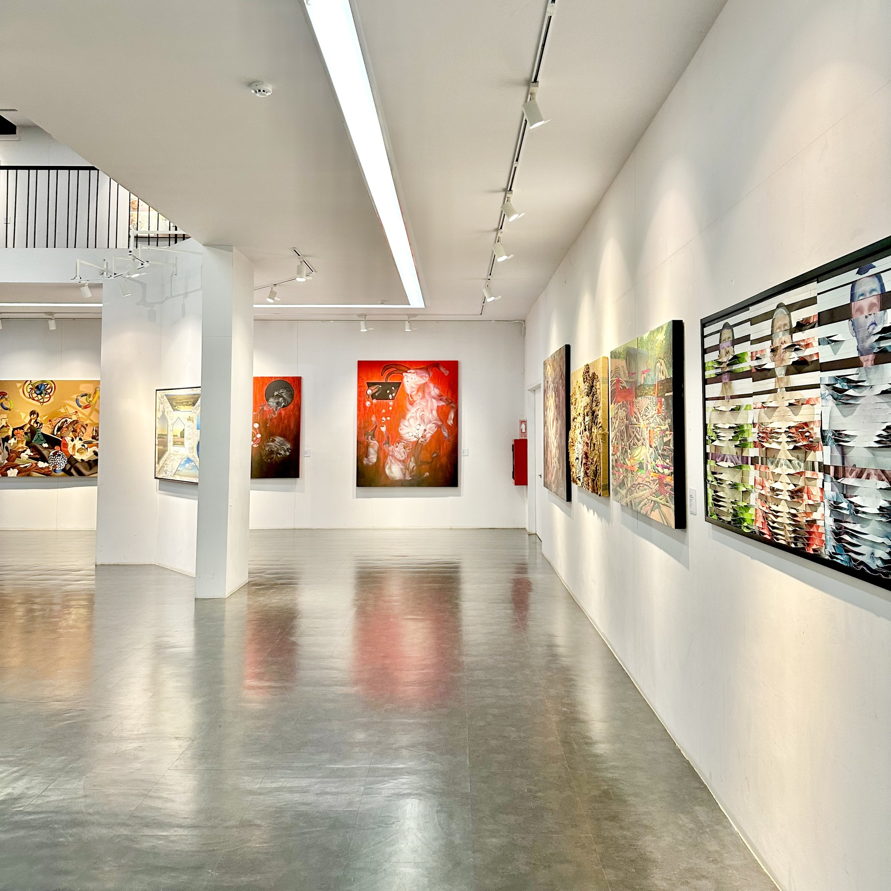
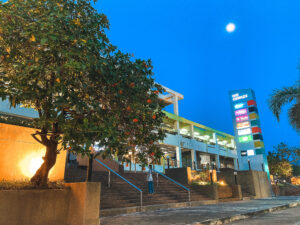
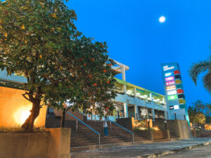

1. หอศิลปวัฒนธรรม (Art and Culture Center)
หอศิลปวัฒนธรรม เป็นอาคารที่โดดเด่นด้วยสถาปัตยกรรมที่สวยงามทันสมัย เป็นศูนย์กลางการเรียนรู้และเผยแพร่งานด้านศิลปวัฒนธรรมของภาคตะวันออกเฉียงเหนือ ภายในจัดแสดงนิทรรศการหมุนเวียนและถาวร มีการจัดกิจกรรมทางวัฒนธรรมและศิลปะต่าง ๆ เป็นประจำ และยังเป็นสถานที่พักผ่อนหย่อนใจและถ่ายรูปยอดนิยมของนักศึกษาและบุคคลทั่วไป
 



 
